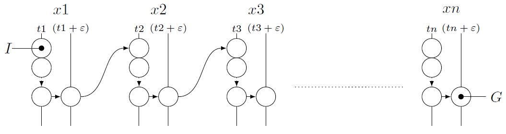

SMTPlan+ is a planner for hybrid systems.
It supports all the features of PDDL+, including exogenous events and continuous processes.
SMTPlan+ provides an SMT encoding of the PDDL+ models and can handle linear domains as well as domains with nonlinear polynomial change.
PDDL+
PDDL+ is the extension of PDDL that allows modelling of mixed discrete-continuous domains, and it follows the Hybrid Automata semantics. DDealing with hybrid systems is becoming more and more an important challenge, as many real-world scenarios feature a mixture of discrete and continuous behaviours.
| Nonlinear change | Processes | Events | Timed Initial Literals | Epsilon separation | Cascading events | |
| SMTPlan+ |
SMT Encoding
To create a paragraph, simply create a block of text that is not separated by one or more blank lines. Blocks of text separated by one or more blank lines will be parsed as paragraphs. If you want to create a line break, end a line with two or more spaces, then hit Return/Enter.
SMTPlan+ translation
To create a paragraph, simply create a block of text that is not separated by one or more blank lines. Blocks of text separated by one or more blank lines will be parsed as paragraphs. If you want to create a line break, end a line with two or more spaces, then hit Return/Enter.